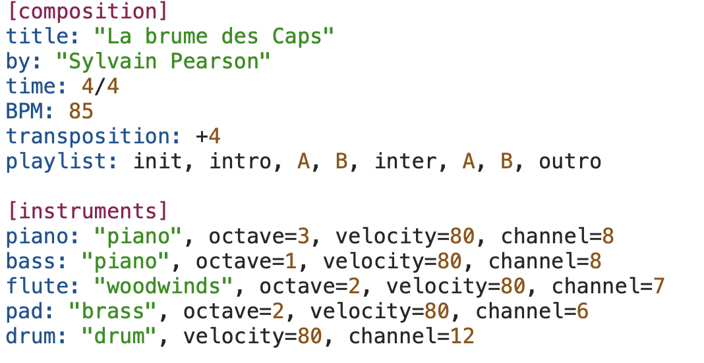
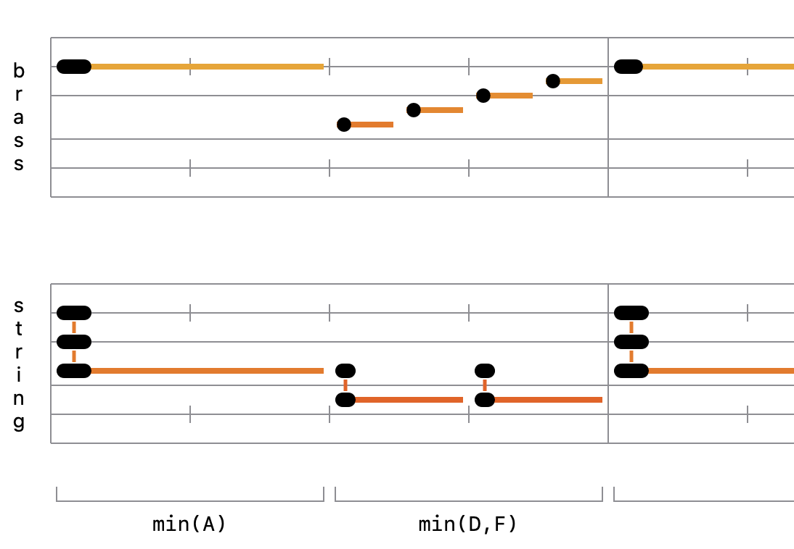
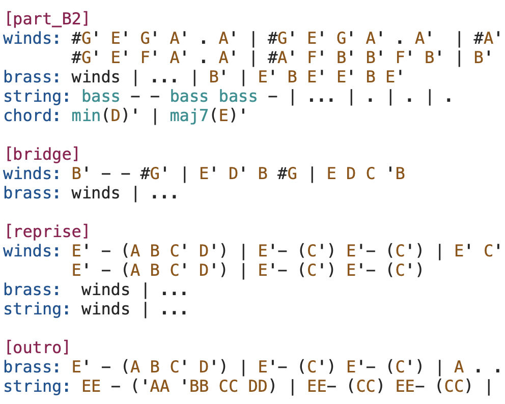

About
EMU-Script lets you write electronic music as text. You compose in a script editor with syntax highlighting and error checking, and the app plays the result using its multi-track MIDI sequencer.
Staves
The EMU musical staff is as simple as can be. It has three horizontal lines per octave,
bound to the C, E, and G notes. A staff can span over one, two, or three octaves.
There are no flat or sharp symbols; each note has its position on the staff.
For more information please refer to the user manual.


Script
The EMU language is a text-based musical notation language, geared towards electronic music creation.
It includes script-like functions for chords, sequences, arpeggios, strums, and MIDI control messages.
A special notation exists for drum sounds, and it can be extended.
For more information please refer to the reference manual.
Download
You can download the latest version of the application using this link:
EMU-Script version 1.1
The minimum required MacOs version is 26.
EMU-Script is a free and open-source software hosted on github.
Contact
To report any bug or submit an improvement request, please send an email to emuscript@gmail.com.